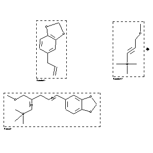

|  |
| FA | RX(1); FLST(1); RX(1) |
Reaction (1 of 1)
| Reaction ID | 8549727 |
| Reactant BRN | 136380; 2072908 |
| Reactant | 5-allyl-benzo[1,3]dioxole; 1-Trimethylsilyl-3-methoxy-1-propin |
| Product BRN | 8566326 |
| Product | (5-benzo[1,3]dioxol-5-yl-2-methoxymethyl-penta-1,4-dienyl)-trimethyl-silane |
| No. of Reaction Details | 1 |
Reaction Details (1 of 1)
| Reaction Classification | Preparation |
| Yield | 83 percent (BRN=8566326) |
| Catalyst | CpRu(NCCH3)3+*PF6- |
| Solvent | acetone |
| Time | 2 hour(s) |
| Temperature | 20 |
| Reaction Type | coupling |
| Citation Pointer | 6238050; Journal; Trost, Barry M.; Machacek, Michelle; Schnaderbeck, Matthew J.; ORLEF7; Org.Lett.; EN; 2; 12; 2000; 1761 - 1764; |
Reference (1 of 1)
| Citation Number | 6238050 |
| Document Type | Journal |
| Authors | Trost, Barry M.; Machacek, Michelle; Schnaderbeck, Matthew J. |
| CODEN | ORLEF7 |
| Journal Title | Org.Lett. |
| Language Code | EN |
| (Series) Volume | 2 |
| Number | 12 |
| Publication Year | 2000 |
| Page | 1761 - 1764 |